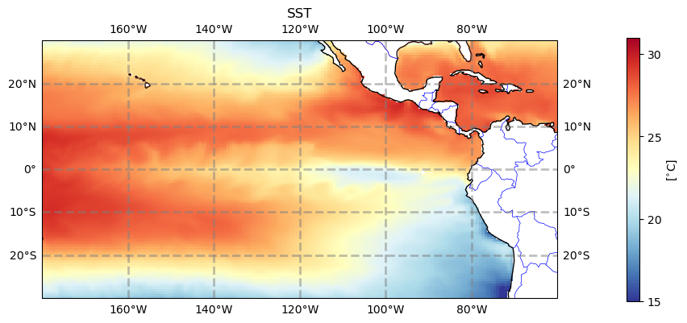
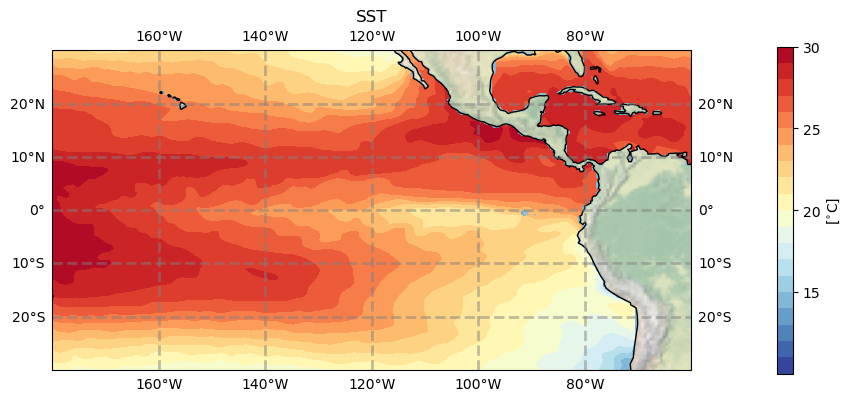

Basic Plotting with MOM6#
BEFORE BEGINNING THIS EXERCISE - Check that your kernel (upper right corner, above) is NPL 2023a. This should be the default kernel, but if it is not, click on that button and select NPL 2023a.
This activity was developed by Gustavo Marques.
Setting up the notebook#
Here we load modules needed for our analysis
# loading modules
# %load_ext watermark # this is so that in the end we can check which module versions we used
%load_ext autoreload
import warnings
warnings.filterwarnings("ignore")
import datetime
import glob
import os
import warnings
import dask
import dask_jobqueue
import distributed
import matplotlib as mpl
import matplotlib.pyplot as plt
import numpy as np
import xarray as xr
from matplotlib import ticker, cm
from cartopy import crs as ccrs, feature as cfeature
import cartopy
Setting up the Dask cluster#
Remember to:
change the project number if doing this outside the tutorial
potentially change the walltime depending on what you want to do
check the memory if you are loading a different dataset with different needs
check the number of cores if you are loading a different dataset with different needs
# Set your username here:
username = "PUT_USER_NAME_HERE"
if "client" in locals():
client.close()
del client
if "cluster" in locals():
cluster.close()
cluster = dask_jobqueue.PBSCluster(
cores=2, # The number of cores you want
memory="8GB", # Amount of memory
processes=1, # How many processes
queue="casper", # The type of queue to utilize (/glade/u/apps/dav/opt/usr/bin/execcasper)
log_directory=f"/glade/derecho/scratch/{username}/dask/", # Use your local directory
resource_spec="select=1:ncpus=1:mem=8GB", # Specify resources
project="UESM0014", # Input your project ID here
walltime="02:00:00", # Amount of wall time
)
# cluster.adapt(maximum_jobs=24, minimum_jobs=2) # If you want to force everything to be quicker, increase the number of minimum jobs,
# # but sometimes then it will take a while until you get them assigned, so it's a trade-off
cluster.scale(12) # I changed this because currently dask is flaky, this might have to be adjusted during the tutorial
client = distributed.Client(cluster)
client
MOM6 diag_table and history files#
The diagnostics in MOM6 are controlled by the diag_table. To understand how the diag_table works, please click on this link. If you have done the gmom_jra.run_length simulation, you can use a text editor to inspect the default diag_table for this simulation. It’s located at:
/glade/u/home/$USER/cases/gmom_jra.run_length/CaseDocs/diag_table
Below is a list of history files for the out-of-the-box MOM6 simulations, including a brief explanation of their purposes. The mom6.h.sfc files contain daily means, while all other history files contain monthly means.
CASENAME.mom6.h.rho2.YYYY-MM.nc - selected 3D variables remapped to a sigma2 vertical coordinate. This is useful, for example, for computing MOC in density-space;
CASENAME.mom6.h.native.YYYY-MM.nc - miscellaneous of 2D and 3D variables on the native vertical grid;
CASENAME.mom6.h.z.YYYY-MM.nc - selected 3D variables remapped to the World Ocean Atlas (WOA) 2009 vertical grid. This is useful for computing T & S biases against the WOA climatology;
CASENAME.mom6.h.sfc.YYYY-MM.nc - surface 2D variables;
CASENAME.mom6.h.ocean_geometry.nc - horizontal grid information.
The following history files include temperature, salinity, velocities, and transports along pre-defined transects. Please refer to the figure below to view the location of some of these transects (the figure is outdated and misses some transects).
CASENAME.mom6.h.Agulhas_Section.YYYY-MM.nc.????
CASENAME.mom6.h.Barents_Opening.YYYY-MM.nc.????
CASENAME.mom6.h.Bering_Strait.YYYY-MM.nc.????
CASENAME.mom6.h.Davis_Strait.YYYY-MM.nc.????
CASENAME.mom6.h.Denmark_Strait.YYYY-MM.nc.????
CASENAME.mom6.h.Drake_Passage.YYYY-MM.nc.????
CASENAME.mom6.h.English_Channel.YYYY-MM.nc.????
CASENAME.mom6.h.Fram_Strait.YYYY-MM.nc.????
CASENAME.mom6.h.Florida_Bahamas.YYYY-MM.nc.????
CASENAME.mom6.h.Florida_Bahamas_extended.YYYY-MM.nc.????
CASENAME.mom6.h.Florida_Cuba.YYYY-MM.nc.????
CASENAME.mom6.h.Gibraltar_Strait.YYYY-MM.nc.????
CASENAME.mom6.h.Iceland_Norway.YYYY-MM.nc.????
CASENAME.mom6.h.Indonesian_Throughflow.YYYY-MM.nc.????
CASENAME.mom6.h.Mozambique_Channel.YYYY-MM.nc.????
CASENAME.mom6.h.Pacific_undercurrent.YYYY-MM.nc.????
CASENAME.mom6.h.Taiwan_Luzon.YYYY-MM.nc.????
CASENAME.mom6.h.Windward_Passage.YYYY-MM.nc.????
CASENAME.mom6.h.Robeson_Channel.YYYY-MM.nc.????
CASENAME.mom6.h.Yucatan_Channel.YYYY-MM.nc.????
CASENAME.mom6.h.Bosporus_Strait.YYYY-MM.nc.????
Figure: Pre-defined sections for transport diagnostics.
Load the data#
Note: the drop-down solutions, below, assume you used gmom_jra.run_length output for plotting
# Set your casename here:
casename = 'gmom_jra.run_length'
# Here we point to the archive directory from a MOM6 simulation
pth = f'/glade/campaign/cesm/tutorial/diagnostics_tutorial_archive/{casename}/ocn/hist/'
# Print path to screen
pth
%%time
# how quick this is depends among other things on the availability of workers on casper
# you can check progress by clicking on the link for the cluster above which will show you the dask dashboard
full_pth = pth + casename + '.mom6.h.native.000?-??.nc' #also might want to use just some years not all
ds_mom = xr.open_mfdataset(full_pth, parallel=True)
ds_mom = ds_mom.sortby(ds_mom.time)
tlist = np.asarray([time.replace(year=time.year+1957) for time in ds_mom.time.values]) # this makes sure the time axis is useful
ds_mom['time'] = tlist
ds_mom["time"] = ds_mom.indexes["time"].to_datetimeindex()
ds_mom #print some meta-data to screen
Exercise 1#
Means of global Surface Heat Flux and Sea Surface Temperature
%%time
fig, ax = plt.subplots(1, 2, figsize=(12,3), sharex=True, sharey=True)
ds_mom.hfds.mean('time').plot(robust=True, ax=ax[0])
ax[0].set_title(r'Surface Heat Flux [W/m$^2$]')
ds_mom.thetao.sel(zl=0, method='nearest').mean('time').plot(robust=True, ax=ax[1], levels=np.arange(0,32,1))
ax[1].set_title(r'Sea Surface Temperature [$^{\circ}$C]')
#plt.savefig('basics_plot_1.png', bbox_inches='tight') # uncomment this to save your figure
Click here for the solution

Figure: Plotting solution.
Question:
Can you plot sea surface height (SSH) instead of surface heat flux (SHF)?
Click here for hints
ds_mom.SSH.mean('time').plot(robust=True, ax=ax[0])
ax[0].set_title(r'Sea Surface Height (cm)')
Question:
Can you plot standard deviations instead of means?
Click here for hints
Replace the .mean function with .std in the plotting call.
ds_mom.SHF.std('time').plot(robust=True, ax=ax[0])
ds_mom.thetao.sel(zl=0, method='nearest').std('time').plot(robust=True, ax=ax[1], levels=np.arange(0,32,1))
Exercise 2#
Let’s create some better-looking plots! Did you notice the x and y axes of the previous plots? They represent the “nominal†longitude (xh) and latitude (yh) of tracer points for labeling the output axes rather than the “true†longitudes and latitudes. MOM6 output is on a curvilinear grid, which means that the grid is not regularly spaced. The true coordinate values are not stored in the mom6.h.native files. Instead, all the horizontal grid information is saved in the mom6.h.ocean_geometry.nc file. Let’s load this file and check its variables.
geo_pth = pth + casename + '.mom6.h.ocean_geometry.nc' #also might want to use just some years not all
hgrid = xr.open_dataset(geo_pth).rename({'lath':'yh','lonh':'xh','latq':'yq','lonq':'xq'}) # rename dimensions to match those in ds_mom
hgrid
Variables geolat and geolon are the 2D variables that we need to use, let’s have a look at them.
# learn what geolat and geolon look like
fig, ax = plt.subplots(1, 2, figsize=(12,3), sharex=True, sharey=True)
hgrid.geolat.plot(ax=ax[0], levels=np.arange(-90,95,5))
ax[0].set_title('geolat')
hgrid.geolon.plot(ax=ax[1], levels=np.arange(-290,90,10))
ax[1].set_title('geolon')
#plt.savefig('basics_plot_2.png', bbox_inches='tight') # uncomment this to save your figure
Click here for the solution
Figure: Plotting solution.
Question
Can you see the irregularity in geolat? What does the discontinuity in geolon mean?
1. Make global maps#
%%time
# initiate the figure
fig = plt.figure(dpi=150, figsize=(12,3))
# add the first subplot
ax_shf = plt.subplot(1, 2, 1, projection=ccrs.Robinson(central_longitude=300.0))
pc = ax_shf.contourf(hgrid.geolon, hgrid.geolat, ds_mom.hfds.mean('time'),
transform=ccrs.PlateCarree(), cmap='RdYlBu_r', extend='both', levels=np.arange(-120,130,10))
ax_shf.set_global()
land = ax_shf.add_feature(
cartopy.feature.NaturalEarthFeature('physical', 'land', '110m',
linewidth=0.5,
edgecolor='black',
facecolor='darkgray'))
shf_cbar = plt.colorbar(pc, shrink=0.55, ax=ax_shf);
shf_cbar.set_label(r'[W/m$^{2}$]')
ax_shf.set_title('Surface Heat Flux')
# add the second subplot
ax_sst = plt.subplot(1, 2, 2, projection=ccrs.Robinson(central_longitude=300.0))
pc = ax_sst.contourf(hgrid.geolon, hgrid.geolat, ds_mom.thetao.isel(zl=0).mean('time'),
transform=ccrs.PlateCarree(), cmap='RdYlBu_r', extend='both', levels=np.arange(0,32,1))
ax_sst.set_global()
land = ax_sst.add_feature(
cartopy.feature.NaturalEarthFeature('physical', 'land', '110m',
linewidth=0.5,
edgecolor='black',
facecolor='darkgray'))
sst_cbar = plt.colorbar(pc, shrink=0.55, ax=ax_sst);
sst_cbar.set_label(r'[$^{\circ}$C]')
ax_sst.set_title('Sea Surface Temperature')
#plt.savefig('basics_plot_3.png', bbox_inches='tight') # uncomment this to save your figure
Click here for the solution
Figure: Plotting solution.
2. Make regional map over continental US#
# define the extent of the map
lonW = -140
lonE = -40
latS = 15
latN = 65
cLat = (latN + latS) / 2
cLon = (lonW + lonE) / 2
res = '110m'
# what does sea surface temperature around the US look like? (i.e. where would you like to go swimming..)
fig = plt.figure(figsize=(11, 8.5))
ax = plt.subplot(1, 1, 1, projection=ccrs.PlateCarree())
ax.set_title('')
gl = ax.gridlines(
draw_labels=True, linewidth=2, color='gray', alpha=0.5, linestyle='--'
)
ax.set_extent([lonW, lonE, latS, latN], crs=ccrs.PlateCarree())
ax.coastlines(resolution=res, color='black')
ax.add_feature(cfeature.STATES, linewidth=0.3, edgecolor='brown')
ax.add_feature(cfeature.BORDERS, linewidth=0.5, edgecolor='blue');
tdat = ax.pcolormesh(hgrid.geolon, hgrid.geolat, ds_mom.thetao.isel(zl=0, time=10), cmap='RdYlBu_r')
plt.colorbar(tdat, ax=ax, shrink=0.5, pad=0.1)
#plt.savefig('basics_plot_4.png', bbox_inches='tight')# uncomment this to save your figure
Click here for the solution
Figure: Plotting solution.
3. Make regional map over the Pacific#
There’s an awful lot of not-ocean over the continental US. Let’s look at the Pacific instead.
# define the extent of the map
lonW = -180
lonE = -60
latS = -30
latN = 30
cLat = (latN + latS) / 2
cLon = (lonW + lonE) / 2
res = '110m'
fig = plt.figure(figsize=(11, 8.5))
ax = plt.subplot(1, 1, 1, projection=ccrs.PlateCarree())
ax.set_title('SST')
gl = ax.gridlines(
draw_labels=True, linewidth=2, color='gray', alpha=0.5, linestyle='--'
)
ax.set_extent([lonW, lonE, latS, latN], crs=ccrs.PlateCarree())
ax.coastlines(resolution=res, color='black')
ax.add_feature(cfeature.STATES, linewidth=0.3, edgecolor='brown')
ax.add_feature(cfeature.BORDERS, linewidth=0.5, edgecolor='blue');
tdat = ax.pcolormesh(hgrid.geolon, hgrid.geolat, ds_mom.thetao.isel(zl=0, time=10), cmap='RdYlBu_r', vmin=15, vmax=31)
cbar = plt.colorbar(tdat, ax=ax, shrink=0.5, pad=0.1, ticks=np.arange(15,35,5))
cbar.set_label(r'[$^{\circ}$C]')
#plt.savefig('basics_plot_5.png', bbox_inches='tight')# uncomment this to save your figure
Click here for the solution

Figure: Plotting solution.
4. Plotting contours#
The figures above use pcolormesh to plot, but we can also use contourf to make filled contours.
# define the extent of the map
lonW = -180
lonE = -60
latS = -30
latN = 30
cLat = (latN + latS) / 2
cLon = (lonW + lonE) / 2
res = '110m'
fig = plt.figure(figsize=(11, 8.5))
ax = plt.subplot(1, 1, 1, projection=ccrs.PlateCarree())
ax.set_title('SST')
gl = ax.gridlines(
draw_labels=True, linewidth=2, color='gray', alpha=0.5, linestyle='--'
)
ax.set_extent([lonW, lonE, latS, latN], crs=ccrs.PlateCarree())
ax.coastlines(resolution=res, color='black')
ax.stock_img() # something else than the boarders for a change
tdat = ax.contourf(hgrid.geolon, hgrid.geolat, ds_mom.thetao.isel(zl=0, time=10), cmap='RdYlBu_r', levels=np.arange(10,31,1))
cbar = plt.colorbar(tdat, ax=ax, shrink=0.5, pad=0.1, ticks=np.arange(15,35,5))
cbar.set_label(r'[$^{\circ}$C]')
#plt.savefig('basics_plot_6.png', bbox_inches='tight')# uncomment this to save your figure
Click here for the solution

Figure: Plotting solution.
Question:
Try looking at the Equatorial Atlantic Ocean or other region that interests you (Gulf of Mexico, Gulf of Maine, California Coast).
Click here for hints
Before plotting the region, you’ll need to modify the latitude/longitude bounds. Here are the bounds for the Equatorial Atlantic Ocean:
# define the extent of the map
lonW = -60
lonE = 20
latS = -30
latN = 30
cLat = (latN + latS) / 2
cLon = (lonW + lonE) / 2
res = '110m'
You can play with these to look at other regions of interest to you.
Question:
Try plotting other variables like sea surface height (SSH) or 50m temperature.
Click here for hints
See hints in exercise 1.